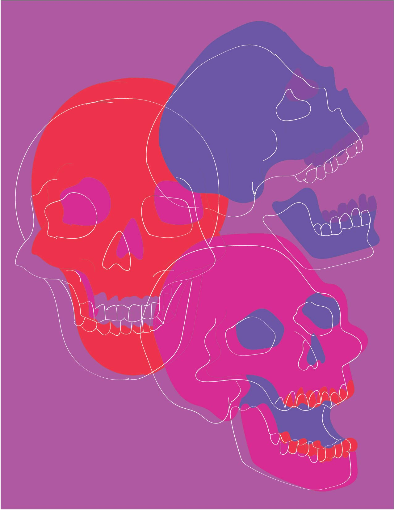
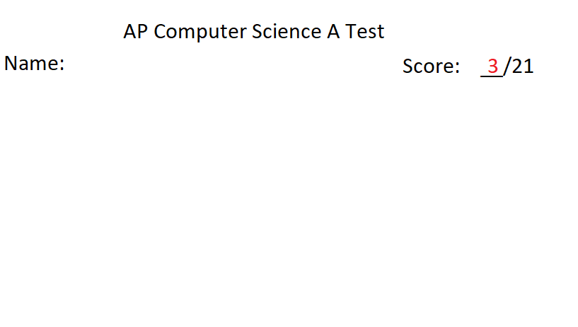

After reading the article by Amir Dori I thought it was interesting to read about common UX patterns in game design. The first topic Dori touches on in the article is UI positioning and how important it is to position certain parts of the game in certain areas so that the user can reach the content comfortably. Dori also addresses popups and how avoiding the x helps to prevent the user from automatically closing the pop up. Another interesting aspect of popups that I hadn't really noticed before is how designers will place what is good for the game on the right so that users are more likely to press those buttons.
Every Picture - Visual Thinking Analysis

Robert Campos, 2020
The image I chose is an illustration I created for a past design course, and fits my topic which will be a collection of my illustrations. I thought the illustration was interesting because it is based on an analogous color palette of red, magenta, and violets. I used more simple shapes and lines, which allowed the more vibrant color palette to be the focal point of the illustration. My collection tells a story about me by showing what I find visually interesting, while also showing progress in my design skills. It will also show multiple mediums that I use to create my illustrations.

Raymond Choi, 2021
The image is of a failed AP Computer Science test, which Raymond told me was a main inspiration for his topic about progression. The most interesting aspects of the image would be the tone that is set, the simple and blunt test score creates almost a sad feeling to the image. After hearing that this test score encouraged Raymond to get better and better at computer science, it creates a powerful hidden meaning about never giving up. The most obvious aspect of the image is the subject, which is a failed test. The mysterious aspect is the personal emotion that is behind the image, which is a powerful and universal feeling since everyone has experienced failure before.
Every Picture - Reading & Response
When looking for websites that use images in an interesting way I found a website for a video production company called Seventh Movement. The home page starts as a grid of images with a black background, but the grid is zoomed in and when the user moves their mouse it navigates which section of the grid the user looks at. Most of the images displayed are of close ups of different people including Michael Jordan and Draymond Green. When the user hovers over the image the black shade on top of the image clears, and the name is displayed in the center. Then when the user clicks on the image a part of the video that is associated with the image begins to play without sound, and the user can click ‘Play Trailer’ in order to play the entire video with sound.
I thought this website was successful at creating multiple ways for the user to interact with the interface, and create an experience for the user. They were also successful at creating such a clean and simple design, yet still create moments of complexity that produce constant interest for the user.
After reading the articles on overlays, I learned there are specific practices that should be considered before incorporating an overlay in a website or design. First the designer must consider why they are adding an overlay; popular reasons will include getting the user to view specific content, complete a required form, or make a certain decision. The reasoning should be carefully considered because overlays can often interrupt the user and cause an inconvenience by disrupting the interaction with the main page they are on. One best practice that should be included when using overlays is a ‘cancel’ button, so the user knows they can get out of the overlay and continue their interaction.
Other best practices that I thought were important from the reading included the placement of the overlay, which oftentimes will appear too low on the browser. Making sure the overlay is in the eyeline of the user and placed in the upper middle section of the page will allow them to actually interact with the overlay. The other best practice that I thought was important when using overlays was formatting it properly for mobile settings. Overlays that are not properly formatted will completely block the user from seeing the content they actually need, and even prevent them from viewing the entire overlay.
Mad Libs 2.0 - Reading & Response
After reading the article I thought there were many helpful points to consider when creating a form and thinking about how the user interacts with them. As the article stated in the beginning, the user should be able to understand the form very simply and should have an easy and enjoyable experience of filling the form out. The major ways of achieving these goals according to the article is through certain choices in the layout and in the logic of creating a form.
Certain best practices that the article mentioned when designing the layout of a form included; one column layouts for better flow, clear labels to easily understand the form, and minimizing the use of drop down menus for a faster process. Some examples of the logic that can be included to strengthen the design of the form included; minimizing the input in order to decrease cognitive load, explaining the requirements of the form, and asking the easy questions first to build commitment for the user.
When I was considering an interface that exemplified these best practices I thought about TurboTax. They include several examples of best practice: explaining required input, one column layout, and even showing the user the multiple steps required.